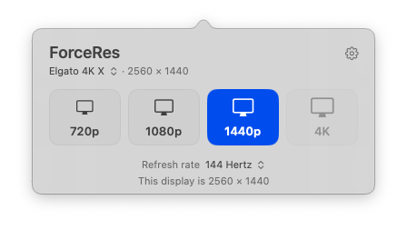

ForceRes
BetaA free Mac menu bar app that sets your displays to 720p, 1080p, 1440p or 4K.
Beta. macOS 15 or later, Apple silicon.

How it works
- Click the ForceRes icon in the menu bar and choose a size.
- Each display keeps its own size, including after sleep and restarts.
- To go back, choose Default Resolution or quit ForceRes.